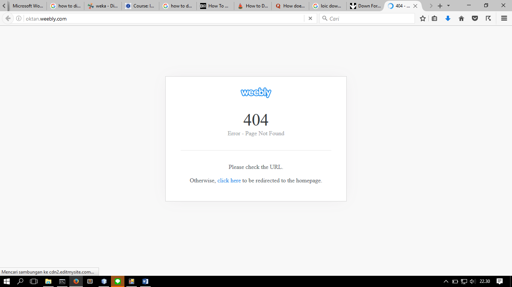
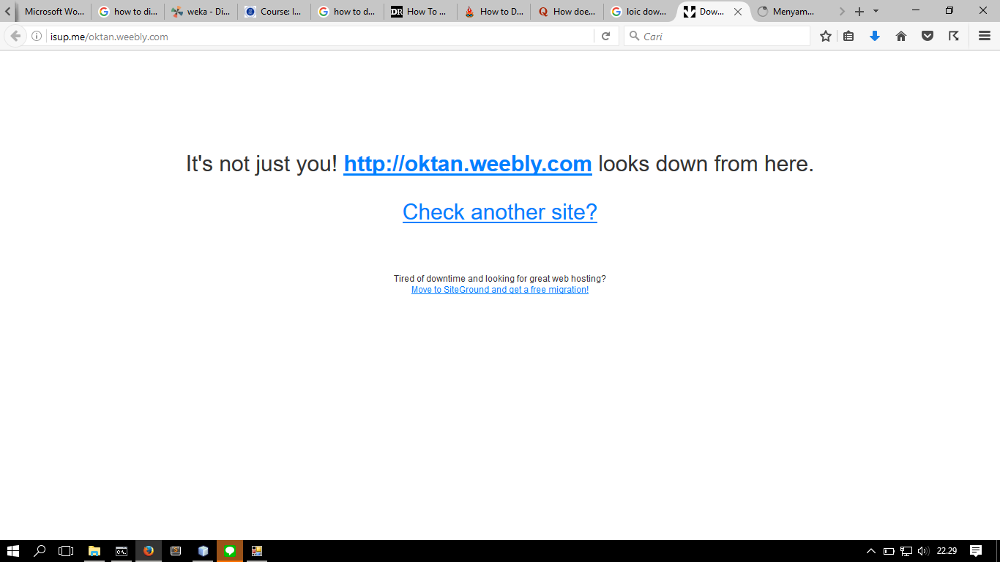

Pendahuluan
Denial of Service attack merupakan suatu teknik yang menggunakan celah dari request handling suatu server. Teknik ini disebut Denial of Service karena teknik ini bertujuan untuk membuat server tidak dapat lagi memberikan service kepada client manapun. Salah satu teknik untuk menyebabkan Denial of Service dari suatu server adalah dengan melakukan flooding request.
Skenario Pengujian
Berikut hal yang dapat dilakukan untuk melancarkan Denial of Service attack
-
Preparation Phase :
- Download aplikasi LOIC dari link berikut
- Matikan antivirus yang sedang berjalan pada komputer Anda, atau tambahkan ignorance terhadap file LOIC.exe pada antivirus Anda
- Buka aplikasi LOIC dari file yang sudah diekstrak tadi
- Masukkan URL atau IP address dari server victim di field dari form "Select your target", lalu klik tombol "Lock on" di sebelahnya
- Anda dapat memodifikasi field-field pada form "Attack Options". Pada kasus kami saat ini, kami akan membiarkan optionsnya default kecuali checkbox "Wait for Reply" akan kami uncheck, dan Method dari attack kami akan kami set dengan method UDP Attack
- Lancarkan serangan dengan mengklik tombol "IMMA CHARGIN MAH LAZER"
- Tunggu hingga server down. Anda dapat memonitornya melalui isup.me/url=atau-ip-dari-victim. Contoh pada kasus kami : isup.me/oktanitb.weebly.com
Execution Phase :
Hasil Pengujian
Hasil yang kami dapatkan pada 22.30 tanggal 23 November 2016 dengan melakukan skenario pengujian diatas adalah seperti gambar berikut.
Dari Laman oktan
Dari Laman isup.me

Apabila Anda sedang malas meload gambar tersebut, kami beritahukan bahwa hasil pengujiannya berhasil pada waktu tersebut. Dengan kata lain, web server dari oktanitb.weebly.com pada 22.30 tanggal 23 November 2016 down. Web server ini tercatat down selama 4 menit.
Simpulan
Dari attack ini kami menyimpulkan:
- Denial of Service attack sangat mungkin dilakukan untuk server yang belum dirancang untuk menangani banyak request yang konkuren
- Attack dapat dilakukan melalui transport layer (TCP atau UDP) atau dapat juga melalui protokol HTTP
Denial of Service dapat berdampak fatal, terutama pada availability server. Oleh karena itu, sebisa mungkin dicegah. Sudah ada service yang dapat mengantisipasi Denial of Service attack, seperti CloudFlare.